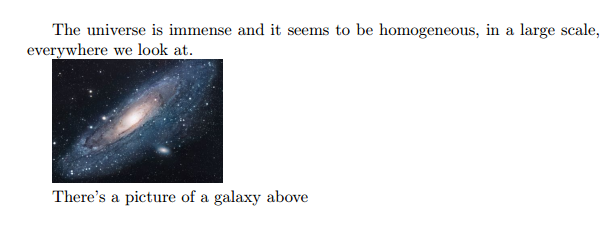

Inserting Images
Three ways to insert images (create LaTeX figures) in Overleaf
The options are as follows:
- Use the Insert Figure button(), located on the editor toolbar, to insert a figure into Visual Editor or Code Editor.
- Copy and paste an image into Visual Editor or Code Editor.
- Use Code Editor to write LaTeX code that inserts a graphic and places it inside a figure environment.
Options 1 and 2 automatically generate the LaTeX code required to create your figure, but here we explore option 3, which provides the most flexibility.
Introduction
In this article we explain how to include images in the most common formats, how to shrink, enlarge and rotate them, and how to reference them within your document. We will start with an example to demonstrate how to import a picture.
\documentclass{article}
\usepackage{graphicx}
\graphicspath{ {./images/} }
\begin{document}
The universe is immense and it seems to be homogeneous,
in a large scale, everywhere we look at.
\includegraphics{universe}
There's a picture of a galaxy above
\end{document}

Latex can not manage images by itself, so we need to use the graphicx package. To use it, we include the following line in the preamble: \usepackage{graphicx}.
The command \graphicspath{ {./images/} } tells LaTeX that the images are kept in a folder named images under the directory of the main document.
The \includegraphics{universe} command is the one that actually included the image in the document. Here universe is the name of the file containing the image without the extension, then universe.PNG becomes universe. The file name of the image should not contain white spaces nor multiple dots.
Note: The file extension is allowed to be included, but it's a good idea to omit it. If the file extension is omitted it will prompt LaTeX to search for all the supported formats. For more details see the section about generating high resolution and low resolution images.
Open an images example in Overleaf
The folder path to images
When working on a document which includes several images it's possible to keep those images in one or more separated folders so that your project is more organised.
The command \graphicspath{ {images/} } tells LaTeX to look in the images folder. The path is relative to the current working directory—so, the compiler will look for the file in the same folder as the code where the image is included. The path to the folder is relative by default, if there is no initial directory specified, for instance
%Path relative to the .tex file containing the \includegraphics command
\graphicspath{ {images/} }
This is a typically straightforward way to reach the graphics folder within a file tree, but can leads to complications when .tex files within folders are included in the main .tex file. Then, the compiler may end up looking for the images folder in the wrong place. Thus, it is best practice to specify the graphics path to be relative to the main .tex file, denoting the main .tex file directory as ./ , for instance:
%Path relative to the main .tex file
\graphicspath{ {./images/} }
as in the introduction.
The path can also be absolute, if the exact location of the file on your system is specified. For example, if you were working on a local LaTeX installation on your own computer:
%Path in Windows format:
\graphicspath{ {c:/user/images/} }
%Path in Unix-like (Linux, Mac OS) format
\graphicspath{ {/home/user/images/} }
Notice that this command requires a trailing slash / and that the path is in between double braces.
You can also set multiple paths if the images are saved in more than one folder. For instance, if there are two folders named images1 and images2, use the command
\graphicspath{ {./images1/}{./images2/} }
Open an images example in Overleaf
Changing the image size and rotating the picture
If we want to further specify how LaTeX should include our image in the document (length, height, etc), we can pass those settings in the following format:
\begin{document}
Overleaf is a great professional tool to edit online documents,
share and backup your \LaTeX{} projects. Also offers a
rather large help documentation.
\includegraphics[scale=1.5]{overleaf-logo}
The command \includegraphics[scale=1.5]{overleaf-logo} will include the image overleaf-logo in the document, the extra parameter scale=1.5 will do exactly that, scale the image 1.5 of its real size.
You can also scale the image to a some specific width and height.
\begin{document}
Overleaf is a great professional tool to edit online documents,
share and backup your \LaTeX{} projects. Also offers a
rather large help documentation.
\includegraphics[width=5cm, height=4cm]{overleaf-logo}
As you probably have guessed, the parameters inside the brackets [width=3cm, height=4cm] define the width and the height of the picture. You can use different units for these parameters. If only the width parameter is passed, the height will be scaled to keep the aspect ratio.
The length units can also be relative to some elements in document. If you want, for instance, make a picture the same width as the text:
\begin{document}
The universe is immense and it seems to be homogeneous,
in a large scale, everywhere we look at.
\includegraphics[width=\textwidth]{universe}
Instead of \textwidth you can use any other default LaTeX length: \columnsep, \linewidth, \textheight, \paperheight, etc. See the reference guide for a further description of these units.
There is another common option when including a picture within your document, to rotate it. This can easily accomplished in LaTeX:
\begin{document}
Overleaf is a great professional tool to edit online,
share and backup your \LaTeX{} projects. Also offers a
rather large base of help documentation.
\includegraphics[scale=1.2, angle=45]{overleaf-logo}
The parameter angle=45 rotates the picture 45 degrees counter-clockwise. To rotate the picture clockwise use a negative number.
Positioning
In the previous section was explained how to include images in your document, but the combination of text and images may not look as we expected. To change this we need to introduce a new environment.
In the next example the figure will be positioned
right below this sentence.
\begin{figure}[h]
\includegraphics[width=8cm]{Plot}
\end{figure}
The figure environment is used to display pictures as floating elements within the document. This means you include the picture inside the figure environment and you don't have to worry about it's placement, LaTeX will position it in a such way that it fits the flow of the document.
Anyway, sometimes we need to have more control on the way the figures are displayed. An additional parameter can be passed to determine the figure positioning. In the example, begin{figure}[h], the parameter inside the brackets set the position of the figure to here. Below a table to list the possible positioning values.
| Parameter | Position |
|---|---|
| h | Place the float here, i.e., approximately at the same point it occurs in the source text (however, not exactly at the spot) |
| t | Position at the top of the page. |
| b | Position at the bottom of the page. |
| p | Put on a special page for floats only. |
| ! | Override internal parameters LaTeX uses for determining "good" float positions. |
| H | Places the float at precisely the location in the LaTeX code. Requires the float package, though may cause problems occasionally. This is somewhat equivalent to h!.
|
In the next example you can see a picture at the top of the document, despite being declared below the text.
In this picture you can see a bar graph that shows
the results of a survey which involved some important
data studied as time passed.
\begin{figure}[t]
\includegraphics[width=8cm]{Plot}
\centering
\end{figure}
The additional command \centering will centre the picture. The default alignment is left.
Wrapping text around figures
It's also possible to wrap the text around a figure. When the document contains small pictures this makes it look better.
\begin{wrapfigure}{r}{0.25\textwidth} %this figure will be at the right
\centering
\includegraphics[width=0.25\textwidth]{mesh}
\end{wrapfigure}
There are several ways to plot a function of two variables,
depending on the information you are interested in. For
instance, if you want to see the mesh of a function so it
easier to see the derivative you can use a plot like the
one on the left.
\begin{wrapfigure}{l}{0.25\textwidth}
\centering
\includegraphics[width=0.25\textwidth]{contour}
\end{wrapfigure}
On the other side, if you are only interested on
certain values you can use the contour plot, you
can use the contour plot, you can use the contour
plot, you can use the contour plot, you can use
the contour plot, you can use the contour plot,
you can use the contour plot, like the one on the left.
On the other side, if you are only interested on
certain values you can use the contour plot, you
can use the contour plot, you can use the contour
plot, you can use the contour plot, you can use the
contour plot, you can use the contour plot,
you can use the contour plot,
like the one on the left.
For the commands in the example to work, you have to import the wrapfig package. To use wrapfig, include the following line in the document preamble:
\usepackage{wrapfig}
This makes the wrapfigure environment available and we can place an \includegraphics command inside it to create a figure around which text will be wrapped. Here is how we can specify a wrapfigure environment:
\begin{wrapfigure}[lineheight]{position}{width}
...
\end{wrapfigure}
The position parameter has eight possible values:
| r | R | right side of the text |
| l | L | left side of the text |
| i | I | inside edge–near the binding (in a twoside document) |
| o | O | outside edge–far from the binding |
The uppercase version allows the figure to float. The lowercase version means exactly here.
Now you can define the wrapfigure environment by means of the commands \begin{wrapfigure}{l}{0.25\textwidth} \end{wrapfigure}. Notice that the environment has two additional parameters enclosed in braces. Below the code is explained with more detail:
{l}- This defines the alignment of the figure. Set l for left and r for right. Furthermore, if you are using a book or any similar format, use instead o for the outer edge and i for the inner edge of the page.
{0.25\textwidth}- This is the width of figure box. It's not the width of the image itself, that must be set in the
\includegraphicscommand. Notice that the length is relative to the text width, but normal units can also be used (cm, in, mm, etc). See the reference guide for a list of units.
\centering- This was already explained, but in this example the image will be centred by using its container as reference, instead of the whole text.
For a more complete article about image positioning see Positioning images and tables
Open an images example in Overleaf
Captioning, labelling and referencing
Captioning images to add a brief description and labelling them for further reference are two important tools when working on a lengthy text.
Captions
Let's start with a caption example:
\begin{figure}[h]
\caption{Example of a parametric plot ($\sin (x), \cos(x), x$)}
\centering
\includegraphics[width=0.5\textwidth]{spiral}
\end{figure}
It's really easy, just add the \caption{Some caption} and inside the braces write the text to be shown. The placement of the caption depends on where you place the command; if it's above the \includegraphics then the caption will be on top of it, if it's below then the caption will also be set below the figure.
Captions can also be placed right after the figures. The sidecap package uses similar code to the one in the previous example to accomplish this.
\documentclass{article}
\usepackage[rightcaption]{sidecap}
\usepackage{graphicx} %package to manage images
\graphicspath{ {images/} }
\begin{SCfigure}[0.5][h]
\caption{Using again the picture of the universe.
This caption will be on the right}
\includegraphics[width=0.6\textwidth]{universe}
\end{SCfigure}
There are two new commands
\usepackage[rightcaption]{sidecap}- As you may expect this line will import a package named
sidecap, but there is an additional parameter:rightcaption. This parameter establishes the placement of the caption at the right of the picture, you can also useleftcaption. In book-like documentsoutercaptionandinnercaptionare also available. The names of these are self-descriptive.
\begin{SCfigure}[0.5][h] \end{SCfigure}- Defines an environment similar to
figure. The first parameter is the width of the caption relative to the size of the image, as declared in\includegraphics. The second parameterhworks exactly as in thefigureenvironment. See the placement section for more information.
You can do a more advanced management of the caption formatting. Check the further reading section for references.
Labels and cross-references
Figures, just as many other elements in a LaTeX document (equations, tables, plots, etc) can be referenced within the text. This is very easy, just add a \label to the figure or SCfigure environment, then later use that label to refer the picture.
\begin{figure}[h]
\centering
\includegraphics[width=0.25\textwidth]{mesh}
\caption{a nice plot}
\label{fig:mesh1}
\end{figure}
As you can see in the figure \ref{fig:mesh1}, the
function grows near 0. Also, in the page \pageref{fig:mesh1}
is the same example.
There are three commands that generate cross-references in this example.
\label{fig:mesh1}- This will set a label for this figure. Since labels can be used in several types of elements within the document, it's a good practice to use a prefix, such as
fig:in the example.
\ref{fig:mesh1}- This command will insert the number assigned to the figure. It's automatically generated and will be updated if insert some other figure before the referenced one.
\pageref{fig:mesh1}- This prints out the page number where the referenced image appears.
The \caption is mandatory to reference a figure.
Another great characteristic in a LaTeX document is the ability to automatically generate a list of figures. This is straightforward.
\listoffigures
This command only works on captioned figures, since it uses the caption in the table. The example above lists the images in this article.
Important Note: When using cross-references your LaTeX project must be compiled twice, otherwise the references, the page references and the table of figures won't work—Overleaf takes care of that for you.
Generating high-res and low-res images
So far while specifying the image file name in the \includegraphics command we have omitted file extensions. However, that is not necessary, though it is often useful. If the file extension is omitted, LaTeX will search for any supported image format in that directory, and will search for various extensions in the default order (which can be modified).
This is useful in switching between development and production environments. In a development environment (when the article/report/book is still in progress), it is desirable to use low-resolution versions of images (typically in .png format) for fast compilation of the preview. In the production environment (when the final version of the article/report/book is produced), it is desirable to include the high-resolution version of the images.
This is accomplished by
- Not specifying the file extension in the \includegraphics command, and
- Specifying the desired extension in the preamble.
Thus, if we have two versions of an image, venndiagram.pdf (high-resolution) and venndiagram.png (low-resolution), then we can include the following line in the preamble to use the .png version while developing the report -
\DeclareGraphicsExtensions{.png,.pdf}
The command above will ensure that if two files are encountered with the same base name but different extensions (for example venndiagram.pdf and venndiagram.png), then the .png version will be used first, and in its absence the .pdf version will be used, this is also a good ideas if some low-resolution versions are not available.
Once the report has been developed, to use the high-resolution .pdf version, we can change the line in the preamble specifying the extension search order to
\DeclareGraphicsExtensions{.pdf,.png}
Improving on the technique described in the previous paragraphs, we can also instruct LaTeX to generate low-resolution .png versions of images on the fly while compiling the document if there is a PDF that has not been converted to PNG yet. To achieve that, we can include the following in the preamble after \usepackage{graphicx}
\usepackage{epstopdf}
\epstopdfDeclareGraphicsRule{.pdf}{png}{.png}{convert #1 \OutputFile}
\DeclareGraphicsExtensions{.png,.pdf}
If venndiagram2.pdf exists but not venndiagram2.png, the file venndiagram2-pdf-converted-to.png will be created and loaded in its place. The command convert #1 is responsible for the conversion and additional parameters may be passed between convert and #1. For example - convert -density 100 #1.
There are some important things to have in mind though:
- For the automatic conversion to work, we need to call pdflatex with the
--shell-escapeoption. - For the final production version, we must comment out the
\epstopdfDeclareGraphicsRule, so that only high-resolution PDF files are loaded. We'll also need to change the order of precedence.
Open an images example in Overleaf
Reference guide
LaTeX units and legths
| Abbreviation | Definition |
|---|---|
| pt | A point, is the default length unit. About 0.3515mm |
| mm | a millimetre |
| cm | a centimetre |
| in | an inch |
| ex | the height of an x in the current font |
| em | the width of an m in the current font |
| \columnsep | distance between columns |
| \columnwidth | width of the column |
| \linewidth | width of the line in the current environment |
| \paperwidth | width of the page |
| \paperheight | height of the page |
| \textwidth | width of the text |
| \textheight | height of the text |
| \unitlength | units of length in the picture environment. |
About image types in LaTeX
- latex
- When compiling with latex, we can only use EPS images, which is a vector format.
- pdflatex
- If we are compiling using "pdflatex" to produce a PDF, then we can use a number of image formats -
JPG: Best choice if we want to insert photos
PNG: Best choice if we want to insert diagrams (if a vector version could not be generated) and screenshots
PDF: Even though we are used to seeing PDF documents, a PDF can also store images
EPS: EPS images can be included using the epstopdf package (we just need to install the package, we
don't need to use \usepackage{} to include it in our document.)
- Vector format or bitmap format?
- Images can be of either vector format of bitmap format. Generally we don't need to worry about it, but if we do happen to know the format the image is in, we can use that information to choose an appropriate image format to include in our LaTeX document. If we have an image in vector format, we should go for PDF or EPS. If we have it in bitmap format, we should go for JPG or PNG, as storing bitmap pictures in PDF or EPS takes a lot of disk space.
Open an images example in Overleaf
Further reading
For more information see
- Positioning images and tables
- Lists of tables and figures
- Single sided and double sided documents
- Lengths in LaTeX
- floatrow package for advanced caption managing of floating elements (tables and figures)
- sidecap package documentation, for side-figure captions
- epstopdf package documentation (EPS to PDF conversion)
Overleaf guides
- Creating a document in Overleaf
- Uploading a project
- Copying a project
- Creating a project from a template
- Using the Overleaf project menu
- Including images in Overleaf
- Exporting your work from Overleaf
- Working offline in Overleaf
- Using Track Changes in Overleaf
- Using bibliographies in Overleaf
- Sharing your work with others
- Using the History feature
- Debugging Compilation timeout errors
- How-to guides
- Guide to Overleaf’s premium features
LaTeX Basics
- Creating your first LaTeX document
- Choosing a LaTeX Compiler
- Paragraphs and new lines
- Bold, italics and underlining
- Lists
- Errors
Mathematics
- Mathematical expressions
- Subscripts and superscripts
- Brackets and Parentheses
- Matrices
- Fractions and Binomials
- Aligning equations
- Operators
- Spacing in math mode
- Integrals, sums and limits
- Display style in math mode
- List of Greek letters and math symbols
- Mathematical fonts
- Using the Symbol Palette in Overleaf
Figures and tables
- Inserting Images
- Tables
- Positioning Images and Tables
- Lists of Tables and Figures
- Drawing Diagrams Directly in LaTeX
- TikZ package
References and Citations
- Bibliography management with bibtex
- Bibliography management with natbib
- Bibliography management with biblatex
- Bibtex bibliography styles
- Natbib bibliography styles
- Natbib citation styles
- Biblatex bibliography styles
- Biblatex citation styles
Languages
- Multilingual typesetting on Overleaf using polyglossia and fontspec
- Multilingual typesetting on Overleaf using babel and fontspec
- International language support
- Quotations and quotation marks
- Arabic
- Chinese
- French
- German
- Greek
- Italian
- Japanese
- Korean
- Portuguese
- Russian
- Spanish
Document structure
- Sections and chapters
- Table of contents
- Cross referencing sections, equations and floats
- Indices
- Glossaries
- Nomenclatures
- Management in a large project
- Multi-file LaTeX projects
- Hyperlinks
Formatting
- Lengths in LaTeX
- Headers and footers
- Page numbering
- Paragraph formatting
- Line breaks and blank spaces
- Text alignment
- Page size and margins
- Single sided and double sided documents
- Multiple columns
- Counters
- Code listing
- Code Highlighting with minted
- Using colours in LaTeX
- Footnotes
- Margin notes
Fonts
Presentations
Commands
Field specific
- Theorems and proofs
- Chemistry formulae
- Feynman diagrams
- Molecular orbital diagrams
- Chess notation
- Knitting patterns
- CircuiTikz package
- Pgfplots package
- Typesetting exams in LaTeX
- Knitr
- Attribute Value Matrices
Class files
- Understanding packages and class files
- List of packages and class files
- Writing your own package
- Writing your own class